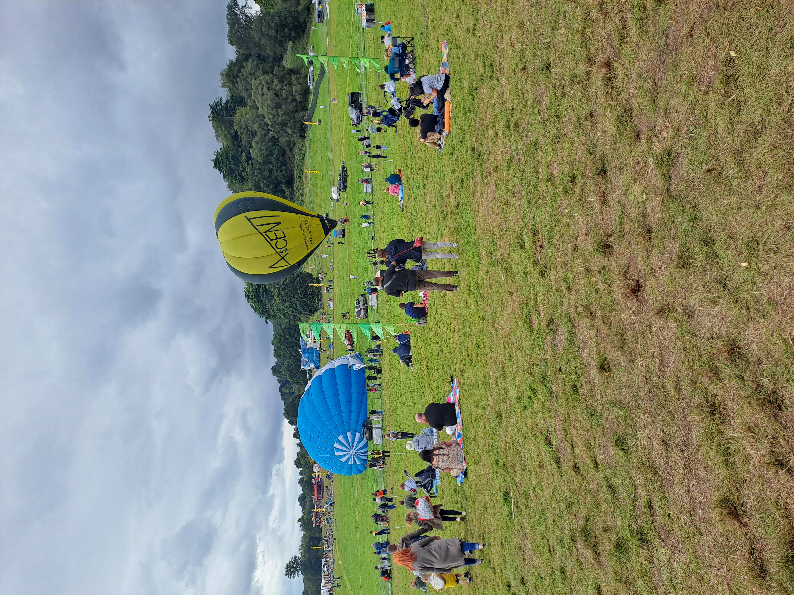

STUDY 02DEMONSTRATION C
Documentation studio
An instruction nobody owns becomes a usable policy, SOP, template and register.
Compare and download the controlled document set
Chapter IV · Workbench 2.0
A CV shows where I've worked. This Workbench goes further: explore how a practical problem can be investigated, organised and brought towards a workable solution. Real experience and invented demonstrations are labelled separately, so you can see exactly what each example proves.
01 / Featured interactive demonstration · C
A fictional shared drive with duplicate policies, unclear owners, mixed archives and files no one quite trusts. Open the explorer, inspect the evidence and see how each decision changes the structure.
Open the file-organisation lab02 / Working demonstrations
Each study has its own task, technique and actual downloadable specimen. None points back to the same generic folder exercise.
An instruction nobody owns becomes a usable policy, SOP, template and register.
Compare and download the controlled document setExplore fictional hardware requests, bottlenecks and the choices behind a better approval flow.
View the data and improvement analysisFollow a fictional access-review obligation from risk to control and evidence.
Inspect the control matrixChallenge a flawed draft, trace weak assertions and see the human-controlled corrections.
Inspect the evidence review03 / Real work & career evidence
Genuine experience is not the same thing as a fictional demonstration. These two are presented as different forms of evidence.
Building a practical business presence: public website, product propositions, structured development and an ongoing programme of work.
Read the public-safe case study ↗International hardware assessment and device classification, grounded in my October 2026 CV rather than an invented client engagement.
Read verified career history ↗A real, maintained static website with documented source changes and a live public outcome.
Inspect the public GitHub source ↗Evidence, not theatre
All fictional organisations, filenames, people, request data, timings and results in the labs are invented for demonstration. They show how techniques work; they are not claims that I delivered these particular projects for an employer. My actual career history is separately linked to my CV. No private House of Carol or employer systems are reproduced here.